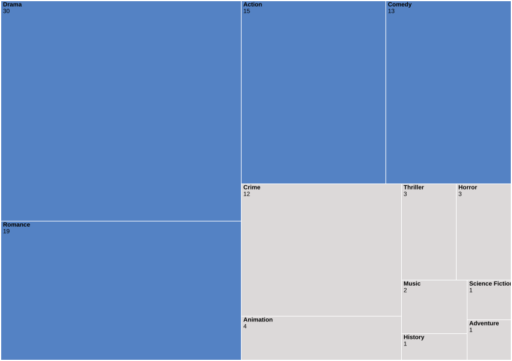

¿Qué dicen mis películas sobre mí?
A partir de mis datos personales de Letterboxd analicé las películas que vi, sus décadas de estreno, mis puntuaciones, los géneros que más consumo y las películas que todavía tengo pendientes.
¿Qué géneros dominan las películas que veo?
Distribución de las 104 películas que vi en Letterboxd según su género principal. El tamaño de cada sección representa cuántas películas corresponden a ese género.

Para evitar duplicaciones, cada película fue clasificada utilizando un único género principal.